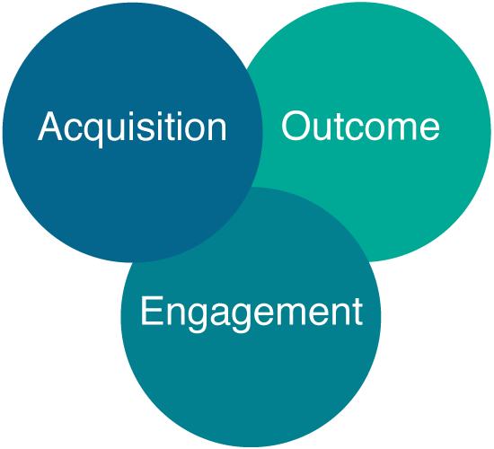

“Measurement is the first step that leads to control and eventually to improvement. If you can’t measure something, you can’t understand it. If you can’t understand it, you can’t control it. If you can’t control it, you can’t improve it.” - H. James Harrington
New to app analytics? Have an app that’s not performing well? The process of understanding how your users engage with your app is critical if want to compete in today’s app market. This guide outlines the core principles and practices of mobile app user engagement analysis. It covers everything you need to know to get started with measuring and thus improving your app’s stickiness and engagement.
Before we explore the specifics of user engagement, it’s important to acknowledge the full framework of mobile app metrics. According to Google’s analytics advocate, this includes acquisition, engagement, and outcomes. Although all are important for a successful app, engagement is the most critical of the three when optimizing for a mobile user experience and improves the metrics of both acquisition and outcomes. For example, if an app has high user engagement it’s more likely to see an increase in new users due to word-of-mouth marketing. It’s also likely to see an increase of in-app purchases due to users having more meaningful encounters within the app.
“User engagement is a quality of the user experience that emphasizes the phenomena associated with wanting to use a technological resource longer and frequently.” -Attfield
User engagement is an aspect of user experience that describes the user wanting to engage with a system frequently and for a long period of time. It emphasizes the positive characteristics of interaction that keeps the user captivated by the technology (Attfield et al, 2011). Engagement is also referred to as a subset of flow, (Webster & Ahuja, 2004, p. 8) which is when people are so absorbed with an activity that nothing else seems to matter (Csikszentmihalyi, 1990, p. 4).
The app market is competitive, according to Apple more than 800 apps are downloaded every second from Apple's App Store. However downloads aren’t enough, nearly 22 percent of apps are never used more than once, which is why engagement is critical to an app’s success. Acquiring users is important, but if someone downloads your app and only uses it once you’re likely not seeing a return on your investment.
If you have an app that’s engaging, not only will your current users stick around increasing ad revenue or in-app purchases, but they’re also more likely to recommend your app to their friends. Referrals are an inexpensive way to drive downloads, and with 92% of consumers saying they trust recommendations from family and friends above all other forms of advertising, it’s a meaningful and effective way to connect with potential users.
There are three basic ways to measure user engagement:
You can use a combination of each approach but analytics provide objective, scalable, and easy to obtain data.
Although self-reported measures like surveys give valuable insight they can be unnatural and interruptive. Furthermore, Jacob Nielsen argues that the first rule of usability is don’t listen to users as insight collected from surveys isn’t always truthful.
Physiology measures that detect changes in the brain or pupil diameter may be objective but the equipment is often expensive and cumbersome to use.